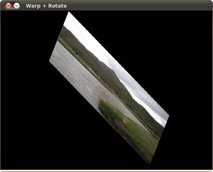

Affine Transformations
Goal
In this tutorial you will learn how to:
- Use the OpenCV function cv::warpAffine to implement simple remapping routines.
- Use the OpenCV function cv::getRotationMatrix2D to obtain a \(2 \times 3\) rotation matrix
Theory
What is an Affine Transformation?
A transformation that can be expressed in the form of a matrix multiplication (linear transformation) followed by a vector addition (translation).
From the above, we can use an Affine Transformation to express:
- Rotations (linear transformation)
- Translations (vector addition)
- Scale operations (linear transformation)
you can see that, in essence, an Affine Transformation represents a relation between two images.
The usual way to represent an Affine Transformation is by using a \(2 \times 3\) matrix.
\[\begin{split}A = \begin{bmatrix} a_{00} & a_{01} \\ a_{10} & a_{11} \end{bmatrix}_{2 \times 2} B = \begin{bmatrix} b_{00} \\ b_{10} \end{bmatrix}_{2 \times 1}\end{split}\]\[\begin{split}M = \begin{bmatrix} A & B \end{bmatrix} = \begin{bmatrix} a_{00} & a_{01} & b_{00} \\ a_{10} & a_{11} & b_{10} \end{bmatrix}_{2 \times 3}\end{split}\]Considering that we want to transform a 2D vector \(X = \begin{bmatrix}x \\ y\end{bmatrix}\) by using \(A\) and \(B\), we can do the same with:
\(T = A \cdot \begin{bmatrix}x \\ y\end{bmatrix} + B\) or \(T = M \cdot [x, y, 1]^{T}\)
\[\begin{split}T = \begin{bmatrix} a_{00}x + a_{01}y + b_{00} \\ a_{10}x + a_{11}y + b_{10} \end{bmatrix}\end{split}\]
How do we get an Affine Transformation?
We mentioned that an Affine Transformation is basically a relation between two images. The information about this relation can come, roughly, in two ways:
- We know both \(X\) and T and we also know that they are related. Then our task is to find \(M\)
- We know \(M\) and \(X\). To obtain \(T\) we only need to apply \(T = M \cdot X\). Our information for \(M\) may be explicit (i.e. have the 2-by-3 matrix) or it can come as a geometric relation between points.
Let’s explain this in a better way (b). Since \(M\) relates 2 images, we can analyze the simplest case in which it relates three points in both images. Look at the figure below:

the points 1, 2 and 3 (forming a triangle in image 1) are mapped into image 2, still forming a triangle, but now they have changed notoriously. If we find the Affine Transformation with these 3 points (you can choose them as you like), then we can apply this found relation to all the pixels in an image.
Code
What does this program do?
- Loads an image
- Applies an Affine Transform to the image. This transform is obtained from the relation between three points. We use the function cv::warpAffine for that purpose.
- Applies a Rotation to the image after being transformed. This rotation is with respect to the image center
- Waits until the user exits the program
The tutorial’s code is shown below. You can also download it here here
#include "opencv2/imgcodecs.hpp" #include "opencv2/highgui.hpp" #include "opencv2/imgproc.hpp" #include <iostream> using namespace cv; using namespace std; const char* source_window = "Source image"; const char* warp_window = "Warp"; const char* warp_rotate_window = "Warp + Rotate"; int main( int, char** argv ) { Point2f srcTri[3]; Point2f dstTri[3]; Mat rot_mat( 2, 3, CV_32FC1 ); Mat warp_mat( 2, 3, CV_32FC1 ); Mat src, warp_dst, warp_rotate_dst; src = imread( argv[1], IMREAD_COLOR ); warp_dst = Mat::zeros( src.rows, src.cols, src.type() ); srcTri[0] = Point2f( 0,0 ); srcTri[1] = Point2f( src.cols - 1.f, 0 ); srcTri[2] = Point2f( 0, src.rows - 1.f ); dstTri[0] = Point2f( src.cols*0.0f, src.rows*0.33f ); dstTri[1] = Point2f( src.cols*0.85f, src.rows*0.25f ); dstTri[2] = Point2f( src.cols*0.15f, src.rows*0.7f ); warp_mat = getAffineTransform( srcTri, dstTri ); warpAffine( src, warp_dst, warp_mat, warp_dst.size() ); Point center = Point( warp_dst.cols/2, warp_dst.rows/2 ); double angle = -50.0; double scale = 0.6; rot_mat = getRotationMatrix2D( center, angle, scale ); warpAffine( warp_dst, warp_rotate_dst, rot_mat, warp_dst.size() ); namedWindow( source_window, WINDOW_AUTOSIZE ); imshow( source_window, src ); namedWindow( warp_window, WINDOW_AUTOSIZE ); imshow( warp_window, warp_dst ); namedWindow( warp_rotate_window, WINDOW_AUTOSIZE ); imshow( warp_rotate_window, warp_rotate_dst ); waitKey(0); return 0; }
Explanation
Declare some variables we will use, such as the matrices to store our results and 2 arrays of points to store the 2D points that define our Affine Transform.
Point2f srcTri[3]; Point2f dstTri[3]; Mat rot_mat( 2, 3, CV_32FC1 ); Mat warp_mat( 2, 3, CV_32FC1 ); Mat src, warp_dst, warp_rotate_dst;
Load an image:
src = imread( argv[1], 1 );
Initialize the destination image as having the same size and type as the source:
warp_dst = Mat::zeros( src.rows, src.cols, src.type() );
Affine Transform: As we explained in lines above, we need two sets of 3 points to derive the affine transform relation. Have a look:
srcTri[0] = Point2f( 0, 0 ); srcTri[1] = Point2f( src.cols - 1, 0 ); srcTri[2] = Point2f( 0, src.rows - 1 ); dstTri[0] = Point2f( src.cols*0.0, src.rows*0.33 ); dstTri[1] = Point2f( src.cols*0.85, src.rows*0.25 ); dstTri[2] = Point2f( src.cols*0.15, src.rows*0.7 );
You may want to draw these points to get a better idea on how they change. Their locations are approximately the same as the ones depicted in the example figure (in the Theory section). You may note that the size and orientation of the triangle defined by the 3 points change.
Armed with both sets of points, we calculate the Affine Transform by using OpenCV function cv::getAffineTransform :
warp_mat = getAffineTransform( srcTri, dstTri );
We get a \(2 \times 3\) matrix as an output (in this case warp_mat)
We then apply the Affine Transform just found to the src image
warpAffine( src, warp_dst, warp_mat, warp_dst.size() );
with the following arguments:
- src : Input image
- warp_dst : Output image
- warp_mat : Affine transform
- warp_dst.size() : The desired size of the output image
We just got our first transformed image! We will display it in one bit. Before that, we also want to rotate it…
Rotate: To rotate an image, we need to know two things:
- The center with respect to which the image will rotate
- The angle to be rotated. In OpenCV a positive angle is counter-clockwise
- Optional: A scale factor
We define these parameters with the following snippet:
Point center = Point( warp_dst.cols/2, warp_dst.rows/2 ); double angle = -50.0; double scale = 0.6;
We generate the rotation matrix with the OpenCV function cv::getRotationMatrix2D, which returns a \(2 \times 3\) matrix (in this case rot_mat)
rot_mat = getRotationMatrix2D( center, angle, scale );
We now apply the found rotation to the output of our previous Transformation.
warpAffine( warp_dst, warp_rotate_dst, rot_mat, warp_dst.size() );
Finally, we display our results in two windows plus the original image for good measure:
namedWindow( source_window, WINDOW_AUTOSIZE ); imshow( source_window, src ); namedWindow( warp_window, WINDOW_AUTOSIZE ); imshow( warp_window, warp_dst ); namedWindow( warp_rotate_window, WINDOW_AUTOSIZE ); imshow( warp_rotate_window, warp_rotate_dst );
We just have to wait until the user exits the program
waitKey(0);
Result
After compiling the code above, we can give it the path of an image as argument. For instance, for a picture like:

after applying the first Affine Transform we obtain:

and finally, after applying a negative rotation (remember negative means clockwise) and a scale factor, we get:
